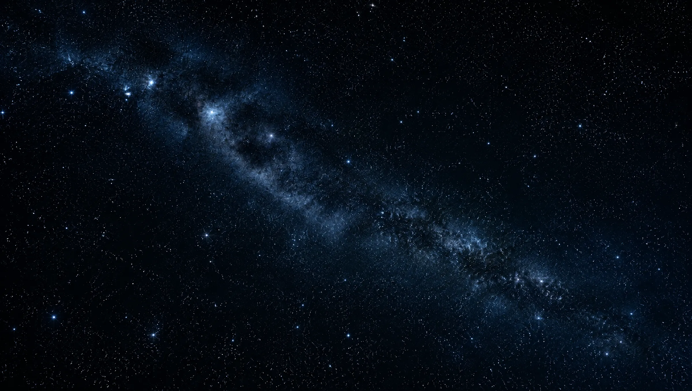
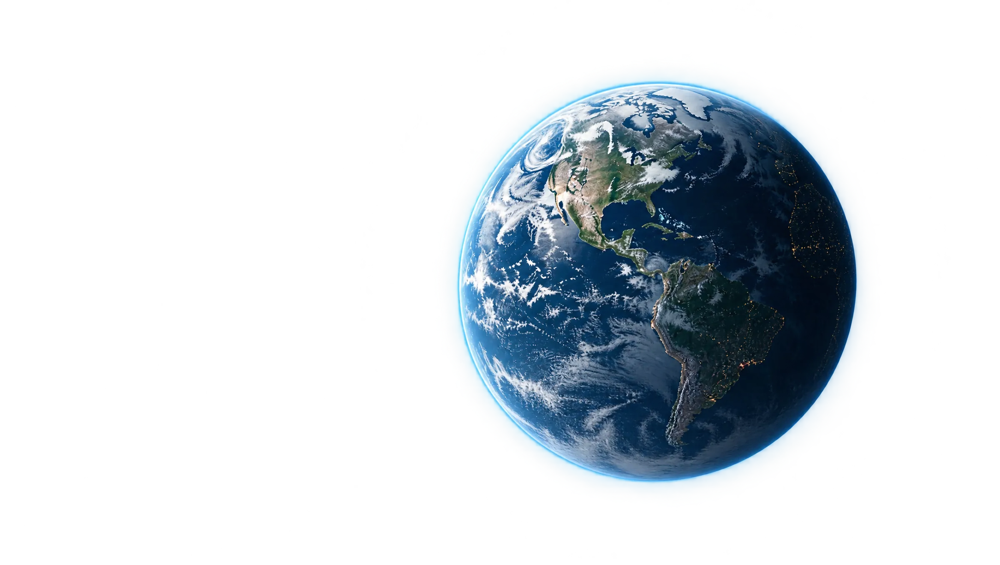
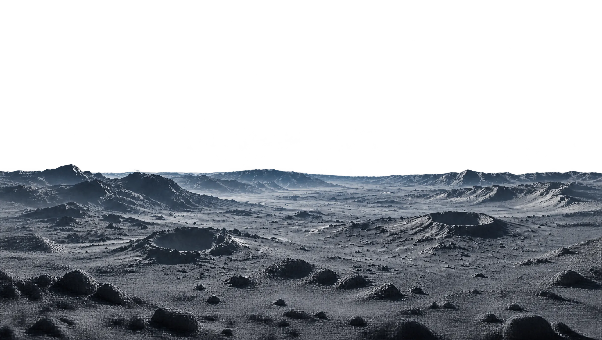
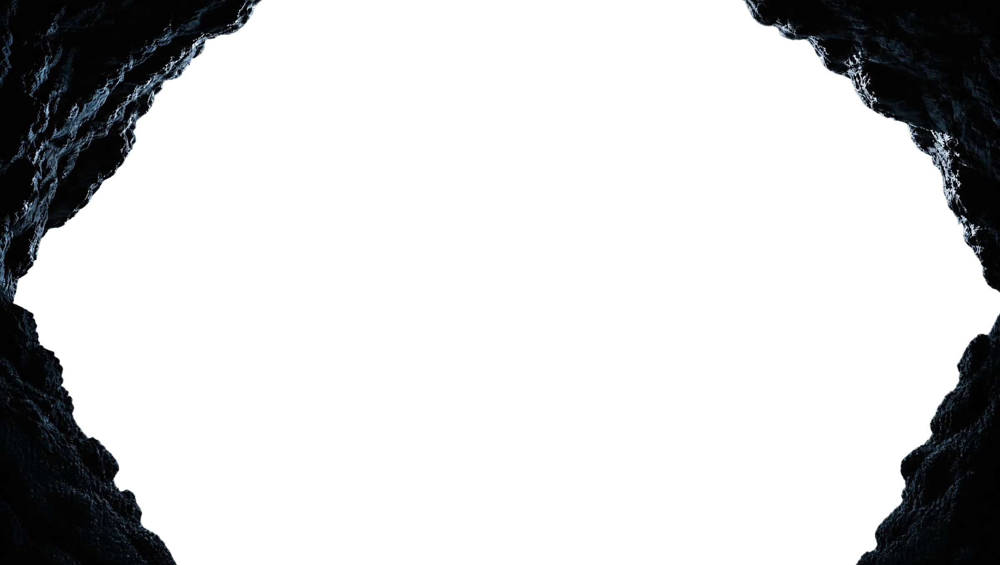
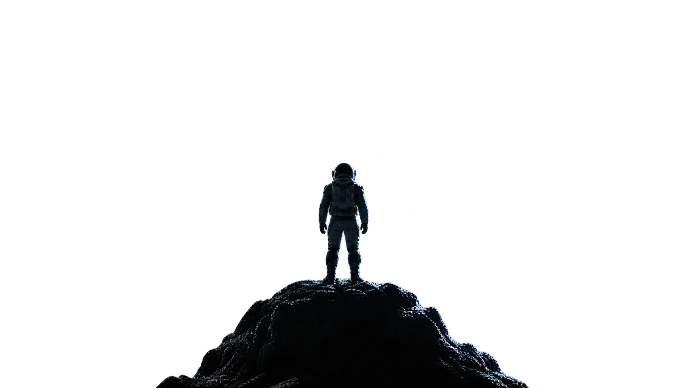
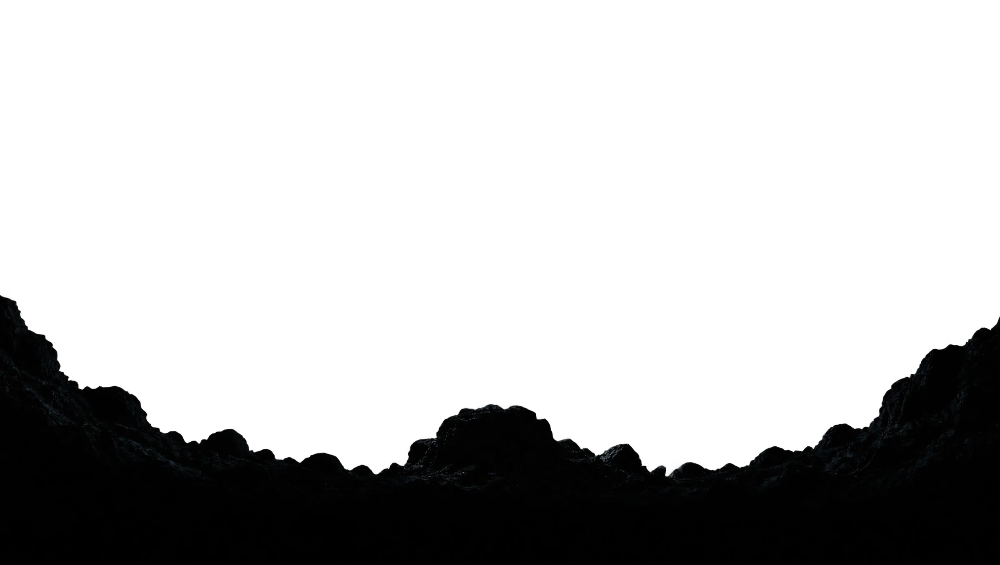
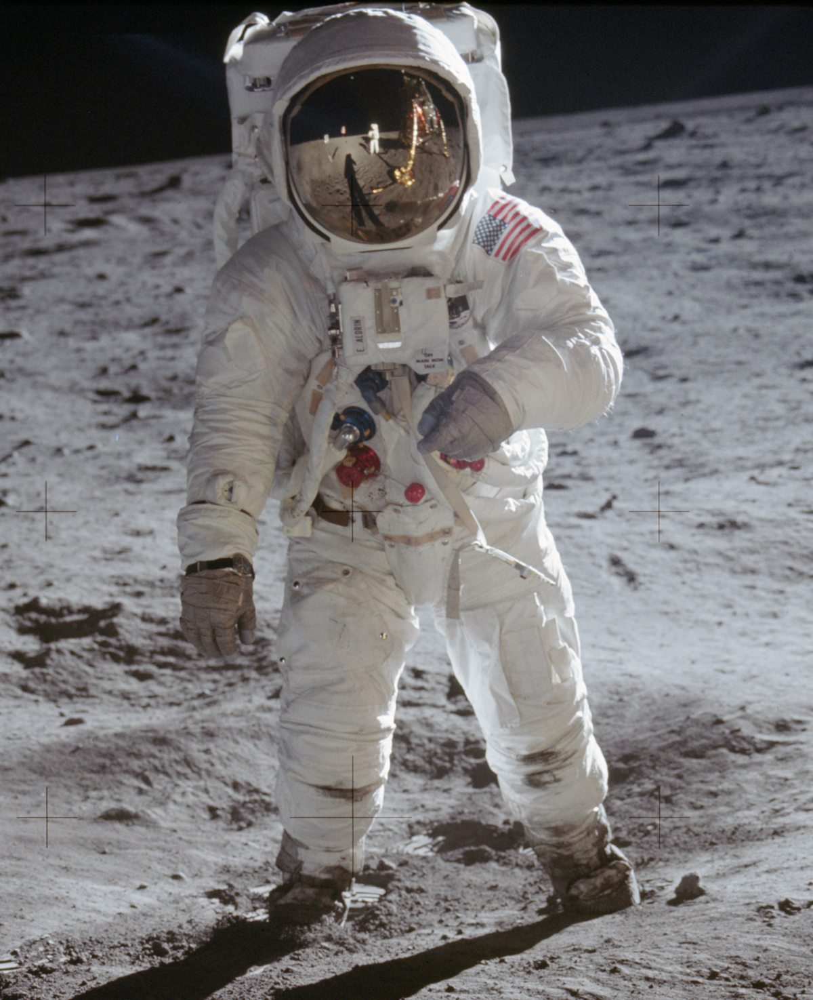

FAVALORO
Monitoreo de salud para astronautas



Escaneo biométrico
Apuntá. FAVALORO mide.
Mové la mira sobre el traje: cuando pasa por un sensor, lo enfoca y te muestra lo que mide en vivo. En el celular, tocá un punto.

Foto: NASA · Apollo 11 (AS11-40-5903), dominio público
Recorrido del dato
Del pulso al médico, dibujado mientras bajás.
Distancia recorrida 0 km
1 s · Tramo 1/4
Una app, cuatro miradas
Cada uno ve lo que necesita.
El brazalete mide solo. Cada tripulante registra su día en un minuto: cómo durmió, cómo se siente, cuánto estrés tiene y qué comió. Con eso, cada rol ve su propia vista.
Demo con datos simulados. No reemplaza una evaluación médica.